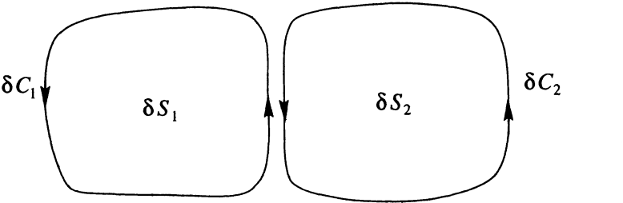

Proof
To demonstrate the theorem we first divide the surface \( S \) into small pieces each with area \( \delta S_i \) and bounding curves \( \delta C_i \). Within each piece of the surface, the definition of \( \nabla \times \mathbf{u} \) is , where the approximation is exact in the limit \( \delta S_i \to 0 \)
Multiplying by \( \delta S_i \) and adding the contributions from all the surface elements,
Now consider the limit \( \delta S_i \to 0 \). The l.h.s. gives the surface integral of \( \nabla \times \mathbf{u} \cdot \mathbf{n} \) over the surface \( S \). On the r.h.s. the contributions to the line integrals from neighbouring elements cancel out, because the line elements \( d\mathbf{r} \) point in opposite directions
Therefore only the curves that form part of \( C \) contribute to the sum, so the sum simplifies to the line integral around \( C \)
1P. C. Matthews, Vector Calculus, New York:Springer-Verlag, 1998.